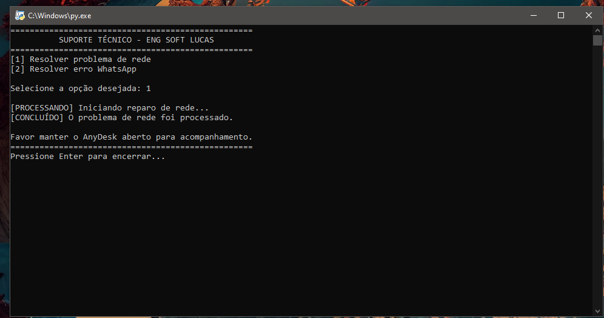
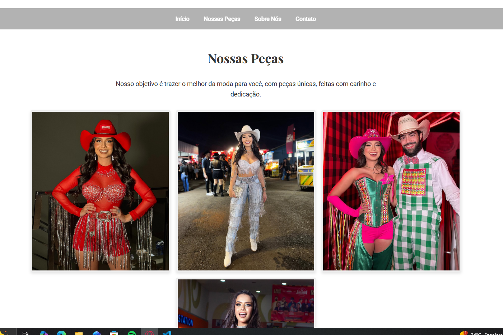
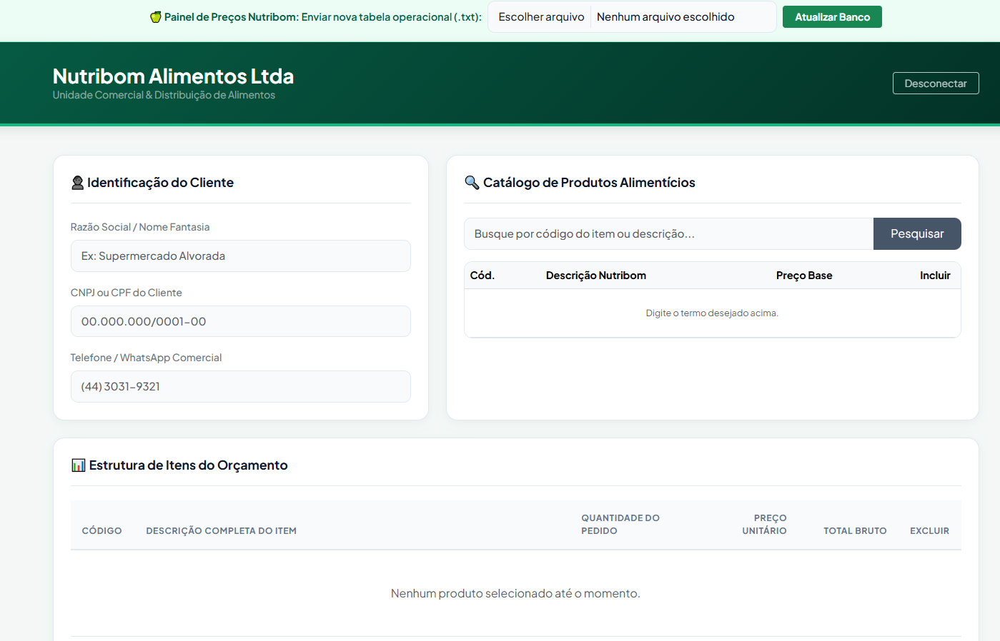
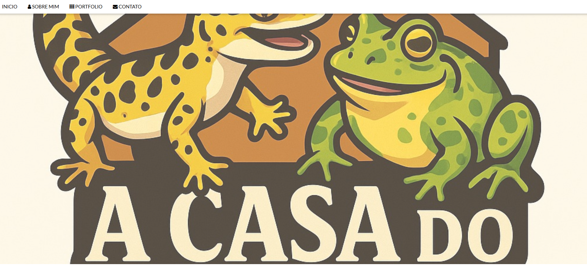

Estudante de Engenharia de software. Atuo desenvolvendo soluções diretas e eficientes, aplicando pensamento analítico na construção de sistemas robustos — desde interfaces web até automação e algoritmos de back-end.
Ferramenta de automação para diagnóstico de rede e sistema. O script otimiza processos realizando limpeza de cache e gerenciamento de adaptadores de rede de forma direta e sem interface redundante.

Stack: Python🐍Desenvolvimento da interface front-end de um portfólio profissional para uma marca de moda, garantindo a exibição limpa e estruturada do catálogo.

Stack: HTML & CSS👁️Implementação do algoritmo Shellsort focado na ordenação eficiente de códigos de produtos para resolução de problemas de inventário logístico.

Stack: C / C++#️⃣Desenvolvimento e estruturação de um blog interativo voltado para a disseminação de conteúdo biológico e vida animal.

Stack: React⚛️Para desenvolvimento de projetos, automação de sistemas ou networking, entre em contato:
GitHub LinkedIn